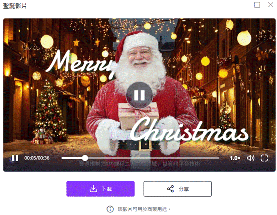

讓這個聖誕節充滿驚喜與魔法！只需簡單幾步，就能快速製作專屬聖誕快樂影片。選擇頭像或範本，編輯個人化訊息，讓AI幫你輕鬆完成創作。分享你的聖誕祝福影片！快來體驗，讓聖誕驚喜不間斷！
以下是 Vidnoz AI 聖誕影片製作器的基本流程：
在進入編輯器介面後，您可以自由客製化影片中的文字內容，讓祝福更具個人風格。輸入收件人的姓名，這將會自動套用到影片中角色的語音和字幕中，使影片看起來就像是專門為對方錄製的一樣。
除了文字之外，您也可以根據需求調整語言、口音、語音風格，變更完成後可撥放試聽。
完成姓名與祝福語等內容編輯後，接下來只需點擊生成影片按鈕，系統便會開始運用 AI 技術自動合成影片。整個過程通常只需幾十秒至數分鐘，您就能看到一支結合語音、動畫與字幕的專屬聖誕影片。
完成編輯後，點擊「預覽」查看最終成品。確認無誤後，可選擇分享或下載影片。
Vidnoz AI 可應用於虛擬主播、教育、行銷、娛樂等場景。